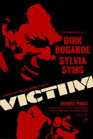

Alan Turing
Asignatura: TIC
Alumno: Dana Gandara Gil
Curso: 1Bach-CT
Fecha: 2026
¿Qué hizo Alan Turing sobre la Inteligencia Artificial?
Alan Turing es considerado uno de los padres de la Inteligencia Artificial y de la informática moderna. En 1950 publicó el artículo “Computing Machinery and Intelligence”, donde planteó la pregunta: “¿Pueden pensar las máquinas?”.
Para responderla propuso el llamado Test de Turing, una prueba que evalúa si una máquina puede imitar el comportamiento humano en una conversación. Esta idea sentó las bases del desarrollo de la Inteligencia Artificial, ya que introdujo el concepto de que una máquina podía simular procesos mentales humanos mediante algoritmos.
Además, Turing creó el modelo teórico conocido como Máquina de Turing, que explica el funcionamiento básico de cualquier ordenador moderno.
¿Qué aportaciones hizo para acabar la guerra?
Durante la Segunda Guerra Mundial, Alan Turing trabajó en Bletchley Park, el centro secreto de descifrado del Reino Unido. Su mayor aportación fue el descifrado de los códigos de la máquina alemana Enigma, utilizada por los nazis para enviar mensajes cifrados.
Turing diseñó una máquina electromecánica llamada Bombe, capaz de encontrar las claves diarias de Enigma con gran rapidez. Gracias a este avance, los Aliados pudieron anticipar ataques enemigos, proteger convoyes marítimos y mejorar sus estrategias militares. Se calcula que su trabajo acortó la guerra entre dos y cuatro años y salvó millones de vidas.
¿Por qué le condenaron y por qué contribuyó eso a su suicidio?
En 1952, Alan Turing fue condenado por ser homosexual, algo que en esa época era ilegal en el Reino Unido. Fue acusado de “indecencia grave” y obligado a elegir entre ir a prisión o someterse a un tratamiento de castración química mediante hormonas. Eligió este último.
El tratamiento le provocó graves efectos físicos y psicológicos, además de la pérdida de prestigio profesional y la retirada de su autorización para trabajar en proyectos secretos del gobierno. En 1954 murió por envenenamiento con cianuro. Aunque oficialmente se declaró suicidio, muchos historiadores consideran que la persecución, la humillación pública y el trato injusto que recibió fueron factores clave en su muerte.

Relación con la película Victim (1961)
La película Victim (1961) muestra la persecución legal y social de los hombres homosexuales en el Reino Unido de los años 50 y 60. Refleja cómo las leyes de la época obligaban a vivir con miedo, secreto y vergüenza, y cómo muchas personas eran chantajeadas debido a su orientación sexual.
Aunque la película no cuenta la historia de Alan Turing, sí retrata el mismo contexto social y legal que él sufrió. Al igual que el protagonista de Victim, Turing fue castigado no por un delito real, sino por su orientación sexual. La sinopsis de la película a veces presenta errores o simplificaciones, pero el mensaje central coincide con el caso de Turing: la injusticia de unas leyes que destruyeron vidas. Películas como Victim ayudaron a concienciar a la sociedad y contribuyeron a la despenalización de la homosexualidad en el Reino Unido en 1967.
